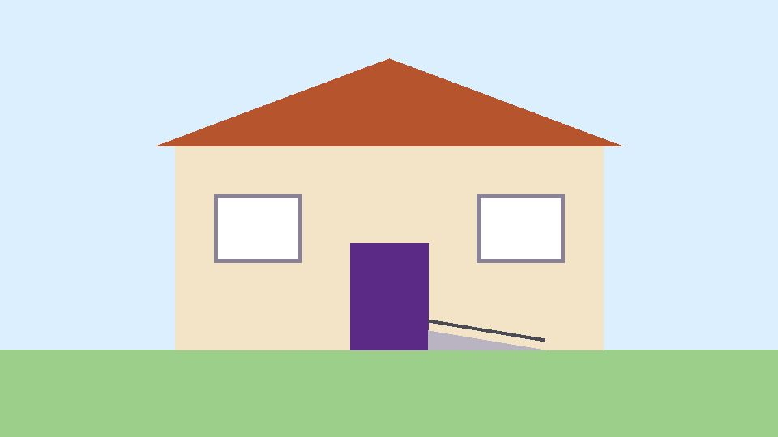

Case study: your project's name
One sentence: what you made, and what it does for people.
- My role
- ...
- Time
- ...
- Tools
- ...
- Links
- Visit the live project

The problem
...
Who it is for
- ...
My process
- ...
Decisions I made, and why
1. Your first decision
What I chose: ...
Why: ...
What I considered: ...
Accessibility
- ...
How I tested
| Test | What I found | What I changed |
|---|---|---|
| Keyboard only | ... | ... |
What is not perfect yet
- ...
Results
- ...
What I learned
- ...
What I would do next
...